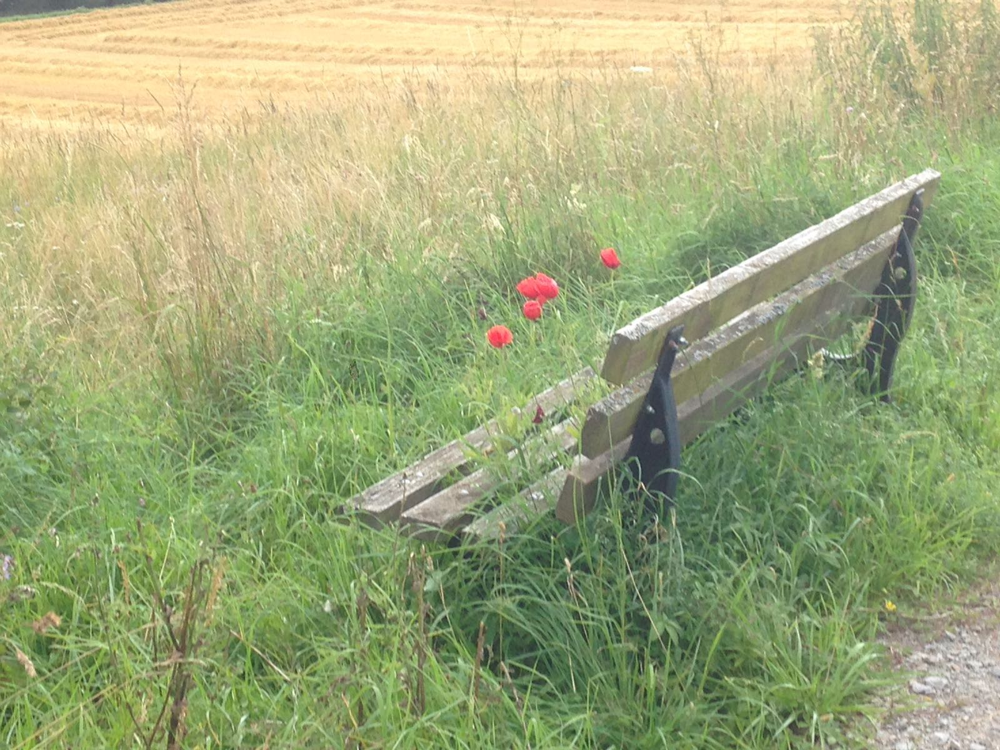

Nimm Platz!
Wer viel unterwegs ist, muss auch mal ausruhen. Schöne Plätze dafür findest du hier.
In Reiseführern werden oft die landschaftlichen und kulturellen Sehenswürdigkeit einer Region vorgestellt. Auf dieser Seite möchte ich die Schönheiten und Besonderheiten einer Landschaft zeigen, die man bei alltäglichen Spaziergängen und Ausflügen entdecken kann.
Wer viel unterwegs ist, muss auch mal ausruhen. Schöne Plätze dafür findest du hier.
Der Eindruck einer Landschaft ändert sich mit dem Wetter. Wetterimpressionen findest du hier.
Was blüht denn da? Eine kleine Auswahl blühender Schönheiten findest du hier.